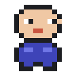
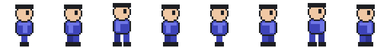
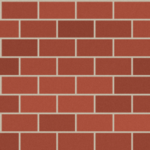
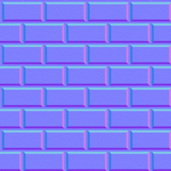
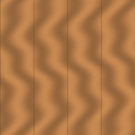

İçe aktarma ve materyal laboratuvarı
Aynı görselin yanlış ve doğru ayarlarla nasıl göründüğünü karşılaştıracak, 3B yolunda ise aynı dokudan üç farklı malzeme üreteceksiniz.
- Bir sprite'ı doğru ölçek ve filtre ayarıyla içe aktarır.
- Bir materyali parlaklık ve pürüzlülük değerleriyle kurar.
- Normal haritasının bir ışık hilesi olduğunu gösterir.
Başlangıç dosyaları










Adımlar
- Varsayılan ayarlarla içe aktarın
karakter_16.png'yi_Proje/Sprites'a sürükleyin ve hiçbir ayarı değiştirmeden sahneye koyun. Yanına 2. haftadaki kare sprite'ı koyun. Game penceresinde yakınlaştırıp bir ekran görüntüsü alın.Kontrol: Karakter küçük ve bulanık görünüyor. - Ayarları düzeltin
Görseli seçin: Pixels Per Unit = 16, Filter Mode = Point (no filter), Compression = None. Apply. Yeni bir ekran görüntüsü alın.
Kontrol: Karakter keskin ve kare sprite ile aynı boyda (1 × 1 birim). - Pixel Perfect Camera
Main Camera'ya Add Component → Pixel Perfect Camera. Assets Pixels Per Unit = 16. Game penceresinin boyutunu değiştirip piksellerin eşit kalıp kalmadığına bakın.
- Sprite sheet dilimleyin
karakter_yuruyus.png'yi içe aktarın; Sprite Mode = Multiple, PPU 32, Point, None. Open Sprite Editor → Slice → Type: Grid By Cell Size → 32 × 32 → Slice → Apply.Kontrol: Görselin yanındaki okla açınca 8 ayrı kare görünüyor. 11. haftada bunlarla animasyon kuracaksınız. - Sprite Atlas
_Proje/Sprites → Create → 2D → Sprite Atlas. Atlasın Objects for Packing listesineSpritesklasörünü ekleyin, Pack Preview'e basın.
- Dokuları içe aktarın
Üç görseli
_Proje/Textures'a sürükleyin.tugla_normal'ı seçin ve Texture Type'ı Normal map yapın, Apply.Kontrol: Normal haritasının önizlemesi mavi-mor görünüyor. - Üç küp
Sahneye yan yana üç küp koyun (x = −2, 0, 2).
- Kuru tuğla
_Proje/Materials → Create → Material, adıTugla_Kuru. Base Map'e tuğla dokusu, Smoothness 0,1. Birinci küpe uygulayın. - Islak tuğla
Tugla_Islak: aynı doku, Smoothness 0,85. İkinci küpe uygulayın. - Normal haritalı tuğla
Tugla_Normal: aynı doku, Smoothness 0,2, Normal Map alanınatugla_normal. Üçüncü küpe uygulayın. - Işığı çevirin
Directional Light'ı seçip Rotation Y değerini yavaşça değiştirin. Üç küpü karşılaştırın. Sonra Scene penceresinin üst menüsünden Shading Mode → Wireframe'e geçip üçüncü küpün geometrisine bakın.
Kontrol: Üçüncü küp pürüzlü görünüyor ama tel kafeste hâlâ 12 üçgenlik düz bir küp. - Tahta
Tahtamateryalini kurun ve bir düzleme (Plane) uygulayın. Tiling değerini 4 × 4 yapın ve farkına bakın.
Kısa not
Teslim ve tamamlanma ölçütleri
- 2B: önce/sonra ekran görüntüleri; sonra görüntüsünde karakter keskin ve 1 × 1 birim. Sprite sheet 8 kareye dilimlenmiş.
- 3B: üç küp aynı dokuyla, farklı malzemeler gibi görünüyor; normal haritalı küpün tel kafes görüntüsü var.
- Kısa notun üç sorusu yanıtlanmış.
Sık karşılaşılan sorunlar
| Sorun | Çözüm |
|---|---|
| Sprite Editor düğmesi yok ya da açılmıyor | Görselin Texture Type'ı Sprite (2D and UI) olmalı. 3D şablonunda 2D Sprite paketi yüklü değilse Package Manager'dan kurun. |
| Normal haritası “Fix Now” uyarısı veriyor | Normal haritasının Texture Type'ı Normal map değil. Fix Now'a basın ya da türü elle değiştirin. |
| Materyal pembe | Shader Universal Render Pipeline/Lit olmalı. |
Final projesine taşı
Final projeniz için bütün görselleri aynı PPU ile (2B) ya da aynı materyal düzeniyle (3B) hazırlayın. Tasarım belgesine hangi görselleri nereden bulacağınızı ya da nasıl çizeceğinizi not edin. Telifsiz görsel kaynakları: Kenney (kenney.nl), OpenGameArt; lisans koşullarını raporunuzda belirtin.